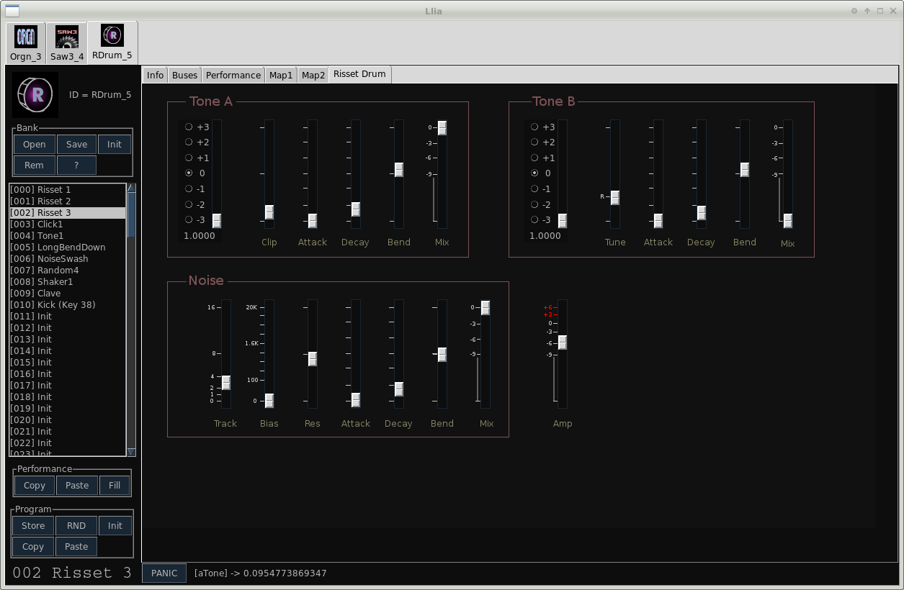
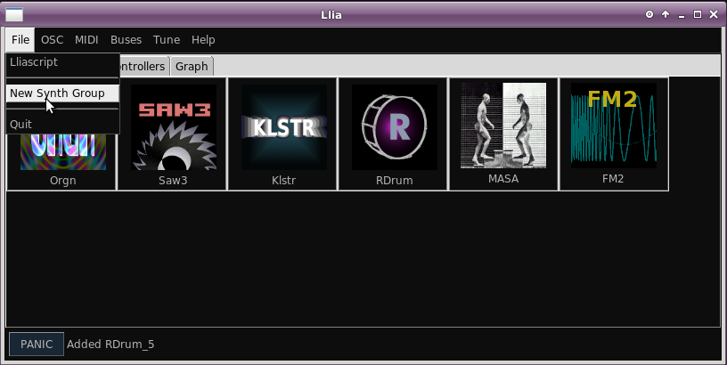

A group window is simply a GUI window used to hold active synths. The synths contained in a group are presented as tabs at the top of window.
A group window with 3 synths. The Rdrum editor is selected
New group windows are created by selecting "New Synth Group" under the File menu of the main Llia window.
The new group is not visible until synths are added to it. Confirmation that a group has been created appears on the status line.
As new synths are added they appear in the newest group window. It is not possible to add synths to a previous group once a new one has been created.
Groups serve only as a way for the user to organize synths into windows, beyond this they have no further significance. Synths from one group may connect to synths in any other group provided restrictions about the synth creation order are observed (see effects).